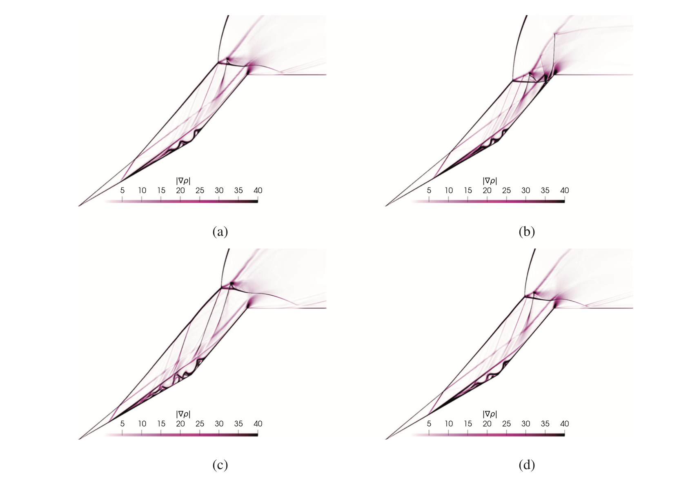
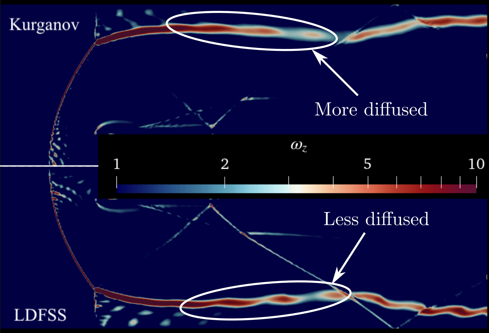

Understanding Hypersonic Flow: Advances in OpenFOAM Solvers for Separated Flow Aero-thermodynamics
Designing the next generation of hypersonic aircraft — like Boeing's experimental X-51A Waverider — is an exercise in managing extremes. At Mach 5 and beyond, the air flow creates shock-waves, separates at control surfaces, and generates thermal loads that can compromise structural integrity. My PhD research focused on the intersection of complex physics analysis and high-performance algorithm development to predict these phenomena for practical applications.
The Physics Challenge: The Double Wedge "Laboratory"
In hypersonic research, the double wedge configuration is our primary tool for understanding the "shock-shock" interactions that occur near control surfaces and fuselage junctions. Through extensive numerical investigations, I have decoded the intricate unsteadiness of these flows, identifying three distinct design parameter regimes that dictate type of flow instability:
- Oscillation Mode: Where the internal shock structures shift dynamically while the leading edge remains anchored.
- Pulsation Mode: The most violent state, characterized by a rapid, cyclical "switching" of the entire flow envelope.
- Vibration Mode: A quasi-steady state with high-frequency, low-amplitude shock jitter.
Insight from the Data: My research demonstrated that these modes aren't random; they are precisely driven by the aft-wedge angle and wedge length ratio. By manipulating the incidence shock position relative to the expansion corner, we can maintain steady flow even at extreme angles.
A numerical schlieren visualization of shock waves and separation region at L1/L2 = 1.5 and θ2 = 50 (a) t = 8 ms, (b) t = 9 ms, (c) t = 9.5 ms, and (d) t = 10.25 ms. Watch animation at
http://dx.doi.org/10.1063/5.0040514.3. More details can be found in the reference article.

The Engineering Breakthrough: Re-architecting rhoCentralFoam
Standard Computational Fluid Dynamics (CFD) tools often break down under these extreme conditions. The popular OpenFOAM solver, rhoCentralFoam, traditionally struggles with numerical stability at high Courant-Friedrichs-Lewy (CFL) numbers due to its sequential integration of conservation equations.
To bridge this gap, I developed an improved density-based compressible flow solver. This involved deep-level C++ programming and a reimagining of the numerical architecture:
Algorithmic Innovation Stack
- Mathematical Optimization: I derived and implemented an analytical inverse of the Jacobian matrix. This allows for an exact transformation from conservative to primitive variables, eliminating the "lag" in the energy-momentum coupling.
- Advanced Time-Stepping: Implemented a third-order TVD Runge-Kutta scheme, allowing the solver to remain stable at CFL ≈ 1.0. This drastically reduces computational time without sacrificing precision.
- High-Resolution Flux Splitting: Implemented Low-Diffusion Flux Splitting Scheme (LDFSS) specifically tuned to capture sharp shock waves with minimal numerical "smearing."
Proven Performance Across Regimes
A solver is only as good as its validation. By applying this algorithm to a diverse suite of test cases, I demonstrated its versatility:
- Subsonic Aerodynamics: Accurately predicted lift and pressure coefficients for NACA0012 airfoils in complex pitching motions.
- Shock Accuracy: Eliminated the spurious oscillations typically found in 1D shock tube problems.
- Complex Structures: Captured the elusive Mach stem locations in supersonic jets with unprecedented clarity.
The comparison of numerical diffusion between Kurganov and LDFSS schemes is made by spanwise vorticity comparison from numerical solution as shown bellow. LDFSS has significantly less diffusion than Kurganov scheme. Try out the code from
https://github.com/gauravkumar463/rhoLDFSSFoam.git. More details can be found in the reference article.

Conclusion: One step closer to flight-ready hypersonic systems
By combining deep physical intuition regarding corner flow separation with custom-coded numerical frameworks, we are moving closer to simulating flight-ready hypersonic systems. My research brings us a step closer to designing aircraft of tomorrow that can survive the heat and pressure of the hypersonic regime.
Scientific Publications
For a deep dive into the data and methodology, you can explore my published work:
- Kumar, G., & De, A. (2021). Role of corner flow separation in unsteady dynamics of hypersonic flow over a double wedge geometry. Physics of Fluids. DOI: 10.1063/5.0040514
- Kumar, G., & De, A. (2021). Modes of unsteadiness in shock wave and separation region interaction in hypersonic flow over a double wedge geometry. Physics of Fluids. DOI: 10.1063/5.0053949
- Kumar, G., & De, A. (2022). An Improved Density-Based Compressible Flow Solver in OpenFOAM for Unsteady Flow Calculations. Springer Aerospace. Chapter Link